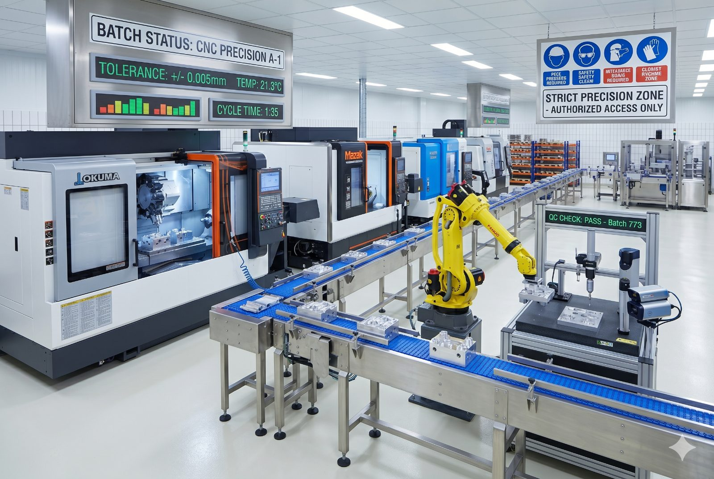

SPC multivariable con tolerancias micrónicas, OEE en tiempo real y detección predictiva de deriva de máquina. De 1% a 0.01% de defectos. IATF 16949 e ISO 9001 automáticos.

No es solo scrap. Es el cliente que exige el IATF, el recall que no podés pagar y la máquina que deriva sin que nadie lo note.
Control simultáneo de dimensiones, torques, pesos y acabados por estación. Reglas de Western Electric automáticas.
Dashboard de OEE por línea, turno y máquina. Identifica el cuello de botella antes que el jefe de turno.
El algoritmo detecta tendencia antes del primer defecto. Alertas con tiempo suficiente para ajustar sin parar la línea.
Conectado a tu CMM, Mitutoyo, Keyence o Zeiss. Cada medición entra al SPC sin entrada manual.
Documentación de calidad de proveedor generada con datos reales. Clientes Tier 1 aceptan sin re-trabajo.
Cada pieza con su historial de proceso. Si sale un defecto en el campo, sabés exactamente de qué turno, máquina y operario.
Variables críticas, instrumentos y plan de muestreo definidos en planta.
Una línea con SPC activo y OEE calculado con datos reales por primera vez.
Todas las líneas bajo SPC. Cpk por pieza y por máquina.
Sistema auditable para IATF 16949. PPAP entregado a clientes Tier 1.
Te mostramos SPC multivariable y OEE en tiempo real configurado para tu proceso. Sin datos genéricos.